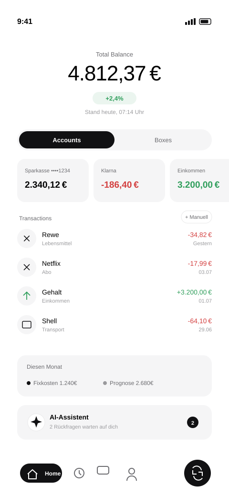
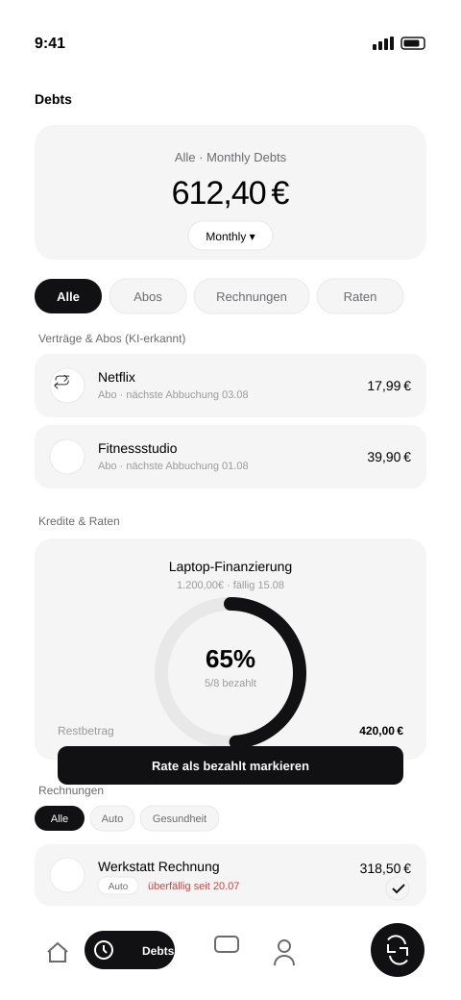
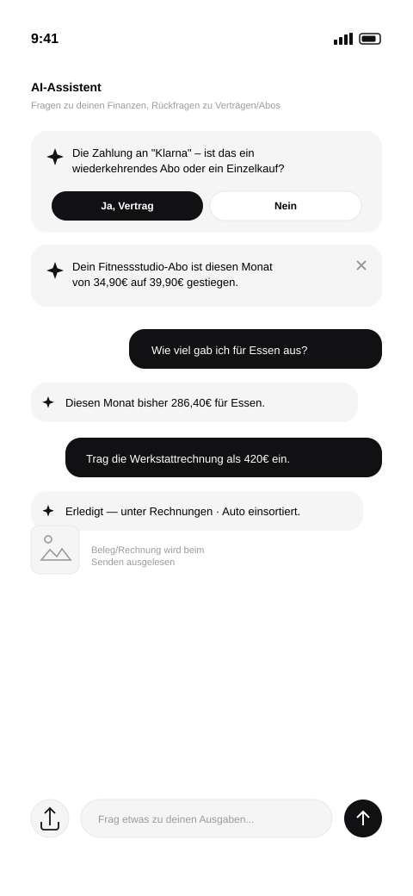
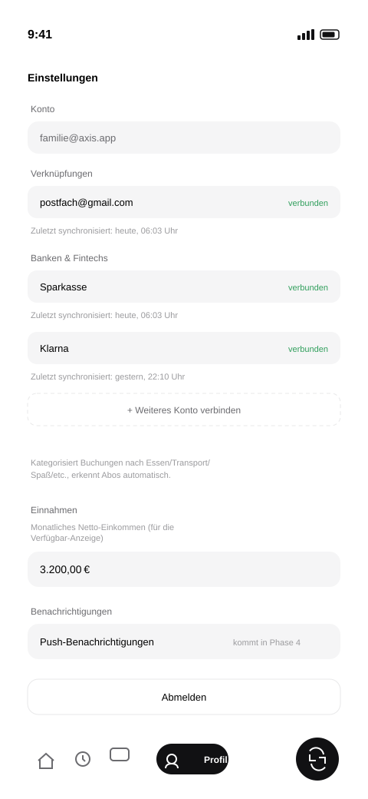

Ich wollte einen ehrlichen Überblick über mein Geld — echter Kontostand, laufende Abos, offene Rechnungen, Raten — ohne zwischen Banking-App, Gmail und einer Excel-Tabelle hin- und herzuspringen. Bank-Apps zeigen nur Kontostände, keine Abos oder Rechnungen aus dem Postfach; Excel kann beides, aber nichts davon automatisch.
Eine private PWA für mich und meine Familie: echte Kontoanbindung über Enable Banking (Open Banking/PSD2, mehrere Banken und Fintechs gleichzeitig), automatisches Mitlesen von Rechnungsmails in Gmail, und ein KI-Assistent mit Function-Calling, der Buchungen nicht nur anzeigt, sondern auch anlegt, kategorisiert und bei Unsicherheit gezielt nachfragt — die Antwort merkt er sich dauerhaft pro Empfänger.
Echte Kontoanbindung über Enable Banking, mehrere Banken/Fintechs gleichzeitig
Gmail-Sync liest Rechnungs- und Kaufbestätigungsmails automatisch aus
KI-Assistent mit Function-Calling: legt Buchungen und Debts selbst an, ändert und verschiebt sie
Beleg-Fotos werden direkt im Chat ausgelesen und automatisch eingetragen
Automatische Abo-Erkennung, mit expliziter Rückfrage bei Unsicherheit (z. B. Klarna/PayPal)
Drei Debt-Kategorien: Abos, Rechnungen mit freien Tags, Raten mit Fortschritts-Gauge
Proaktive Hinweise im Chat: Preiserhöhungen, fällige Rechnungen, ungewöhnliche Ausgaben
Täglicher Cron-Sync für Bank und Gmail, keine manuelle Aktualisierung nötig
Installierbare PWA, Verbindungen jederzeit trennbar in den Einstellungen




Screenshots mit frei erfundenen Kontoständen, Namen und Beträgen — keine echten Finanzdaten. Privates Tool für mich und meine Familie, kein öffentlicher Zugang.
Ich wollte mein Training nach Splits loggen — Push/Pull/Legs, eigene Übungen, Sätze mit Gewicht und Wiederholungen. Die meisten Gym-Apps, die ich probiert habe, waren entweder Abo-pflichtig, vollgestopft mit Social-Features, die ich nie nutze, oder haben genau die eine Sache nicht gemacht, die ich brauchte: sauber zeigen, ob ich mich von Woche zu Woche steigere.
Eine eigene Progressive Web App — installierbar auf dem Homescreen, offlinefähig über einen Service Worker, ohne App-Store-Umweg. Splits und Übungen sind frei konfigurierbar, jeder Satz wird beim Eintippen automatisch (debounced) gespeichert. Auswertung läuft komplett über selbst gezeichnete Canvas-Charts statt einer externen Chart-Bibliothek.
Splits & Übungen frei anlegen, inkl. Bodyweight-Übungen
Satz-Logging mit Gewicht/Wiederholungen, "letztes Training übernehmen"
Volumen-Trend & persönliche Rekorde pro Übung
Streak-Heatmap der letzten vier Trainingswochen
Kalorien- & Makro-Tracking, Mahlzeiten per KI-Freitext geschätzt ("4 Eier mit Ketchup" → automatisch kcal)
Körpergewicht-Verlauf mit 30-Tage-Trend
Ich habe selbst ein Reinigungs-Business betrieben und dafür Einsatzplanung, Zeiterfassung mit Nachweis und eine saubere Lohnabrechnung gebraucht. Was am Markt existierte, war entweder generische Baustellen-Software ohne DATEV-Anbindung und Kundennachweis, oder schlicht zu teuer für den Zuschnitt eines kleinen Teams.
Eine mandantenfähige SaaS-Plattform mit vier Oberflächen in einem System: Dashboard für den Inhaber, eigene App für die Mitarbeiter, ein Kunden-Portal ohne Login und Verwaltung für mich als Plattform-Betreiber. Inzwischen längst nicht mehr nur für den eigenen Betrieb — mit Stripe-Abrechnung, automatischem Seat-Sync und Platz für weitere Firmen.
Live-Dashboard: Mitarbeiter, Einsätze und Krankmeldungen auf einen Blick
Einsatzplanung per Drag & Drop, automatischer Ersatz-Dispatch bei Krankmeldung
Zeiterfassung mit GPS & Foto — funktioniert auch offline
Echter DATEV-Export: Soll-Ist-Stunden, Bewegungsdaten, PDF & CSV
Kunden-Portal ohne Login: Nachweise, Checkliste, nächster Termin
Mitarbeiter-App in 7 Sprachen mit Push-Benachrichtigungen
Controlling: Umsatz, Kosten und Marge pro Objekt
Plattform-Admin für mehrere Firmen gleichzeitig
Stripe-Abrechnung mit automatischem Seat-Sync, installierbare PWA
Aufnahmen aus der echten Anwendung — Dashboard, Krankmeldung-Dispatch, Mitarbeiter-App und Abrechnung.
Für Kaltakquise per Telefon braucht man einen sehr konkreten Workflow: Leads importieren, anrufen, Status setzen, Wiedervorlagen nicht vergessen. Fertige CRMs waren entweder zu teuer für ein kleines Team oder zu allgemein gebaut — die typischen Telesales-Abläufe wie Wiedervorlage-Termine oder freie Pipeline-Stufen mussten wir uns dort mühsam zusammenbauen.
Ein internes CRM, exakt auf diesen Ablauf zugeschnitten. Leads lassen sich per CSV importieren (mit Duplikatserkennung), die Pipeline ist ein Kanban-Board mit frei konfigurierbaren, farbcodierten Status-Spalten. Zugriff ist rollenbasiert zwischen Setter und Admin getrennt, abgesichert über eine eigene Session-Middleware.
Kanban-Pipeline mit Drag & Drop, auch touch-fähig
Frei konfigurierbare Status-Spalten mit eigenen Farben
Wiedervorlage-System für fällige Rückrufe
CSV-Import mit automatischer Duplikatserkennung
Rollenbasierter Zugriff: Setter vs. Admin
Dialer mit Warteschlangen-Modi, Tagesziel & Streak-Gamification
Team-Dashboard mit Leaderboard, Conversion & Anrufzeiten-Analyse
E-Mail-Composer mit Live-Vorschau und direktem Gmail-Versand
Admin-Bereich: Nutzerverwaltung, Listen-Import, Aktivitätslog
Vollständiger Nachbau mit Demo-Daten, keine Aufnahmen — jede Seite lässt sich frei durchklicken: Dashboard, Leads, Kanban, Dialer, E-Mails und Admin-Panel (Login oben als Setter oder Admin). Kein Backend, keine echten Kundendaten — Änderungen verschwinden beim Neuladen.
Ich höre Musik meistens sehr gezielt — suchen, abspielen, weiter. Die offiziellen Spotify-Clients sind für genau diesen Flow überladen. Ich wollte eine Oberfläche, die nur das kann: Suche, Playlists, Player-Steuerung, ohne alles drumherum.
Ein reines Frontend, das direkt gegen die Spotify Web API und das Web Playback SDK spricht. Anmeldung läuft über den OAuth-Authorization-Code-Flow mit PKCE — dadurch ist kein eigenes Backend und kein Client Secret nötig, der Login bleibt trotzdem sicher.
Sicherer Login per PKCE, ganz ohne eigenen Server
Songsuche direkt über die Spotify-API
Personalisierte Startseite: "Zuletzt gehört", Alben & Playlists
Vollflächiger Player: Cover, Fortschritt, Shuffle & Repeat
Mini-Player bleibt beim Weiterstöbern aktiv
Kein zusätzlicher Client — läuft komplett im Browser
Zum Testen der Live-Demo ist ein Spotify-Premium-Account nötig (Voraussetzung des Web Playback SDK). Ohne Premium zeigt das Video unten die volle Funktionalität mit echtem Ton.